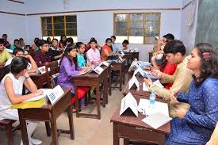
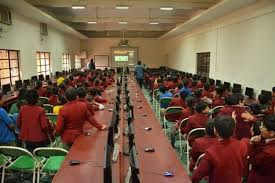
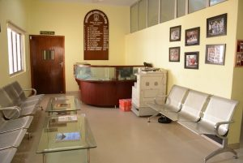
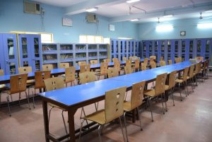
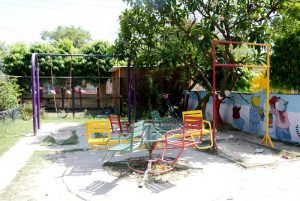

The school maintains a well-equipped dispensary under the care of trained nurse and a part time Medical Officer. Infirmary renders quick and effective First Aid in case of emergency.
With a commitment to change and ensure that we are not static, Smart Classes were introduced in each class rooms.Using the most advanced audio, visual and in aesthetic learning techniques, Smart classes make learning efficient and effective.
The senior Computer lab has 100 computers which cater to students to practice and learn the technology without any hindrance. The lab is well-equipped with updated softwares, internet access, printer, scanner, projector and professional support. We have personnel on duty to assist with computer hardware and software issues and questions. All the computers in the lab are in network and arranged in rows and so that every student has a similar view of one end of the room to facilitate lecturing or presentations. Besides, computer lab is also used for conducting training programs, workshops and seminars for staff and faculty.
Seth Anandram Jaipuria School flaunts an inviting Reception that extends a positive ambiance to all the visitors. Hospitable and efficient staff is available throughout the school office hours and are happy to help, with a smile. The visitors are made comfortable in the waiting area and their queries are quelled in the most efficient manner possible.
Our school maintains a well-furnished computerized library and reading room. Newspapers and magazines are provided in addition to a wide range of books which also include story books, Dictionaries, Encyclopedias, and Books on General Knowledge and Year Books. It is also updated with digital material. Library is fully Air Conditioned giving a soothing environment to concentrate on work with an assistance provided by experienced Librarians. Timely up gradation of study material is a part of our system in library.
Not only do the children have fun, they also use their bodies in healthy ways. In fact, they physically rejuvenate themselves. Our swing field consists of various kinds of swings, slide, and climbers and is well spaced to accommodate an entire class.